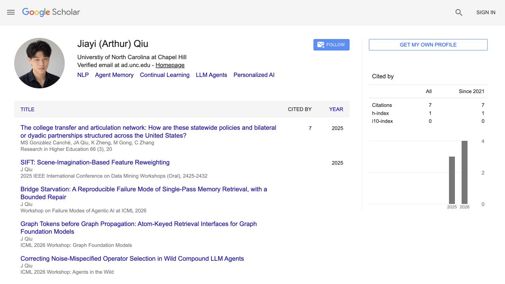

GitHub
@ArthurQQQQ

 Honors Carolina undergraduate at UNC–Chapel Hill
Honors Carolina undergraduate at UNC–Chapel Hill
I study how agents learn continually from experience and stay reliable over long horizons.
I study computer science and economics, with a minor in mathematics.
I work with Shashank Srivastava (Lab) and Snigdha Chaturvedi (Lab). I’m writing my honors thesis in economics with Peter R. Hansen.

@ArthurQQQQ
Jiayi (Arthur) Qiu

Uses a bridge clue to guide a second retrieval pass and recover evidence missed on the first pass.
Ranks fine-grained propositions, then retrieves the complete source passages for the model to read.
Turns table rows into written scenes and uses an LLM to weight features for a standard tabular model.
Analyzes statewide transfer policies and bilateral agreements between U.S. colleges.
Bounded second-pass retrieval for long-context memory.
Ranks propositions and retrieves their original passages.
Reproduction of language-model feature weighting for tabular models.
A local workspace for finding, comparing, and maintaining agent skills.
Scopes research ideas and reviews the argument and structure of paper drafts.
Builds research talks around mechanisms, worked examples, and evidence.
The site and its interactive figures, hosted on GitHub Pages.
A Chinese-language conversation prototype with a source-linked case library.